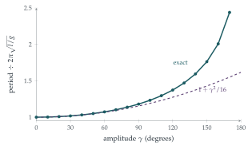

STEP III 1998, Question 11
Read the question before you go on. It is in the STEP Support Programme’s question database: step.maths.org/questions/98-s3-q11
The hook
Every physics student learns that a pendulum’s period is \(2\pi\sqrt{l/g}\), independent of the size of the swing. Galileo believed this, supposedly after timing a swinging lamp in Pisa cathedral against his pulse, and it is the reason pendulum clocks work. But it is not quite true. The formula comes from the approximation \(\sin\theta \approx \theta\), and a pendulum swinging through a wide arc takes longer. At \(90^\circ\) the period is \(18\%\) longer; a pendulum released from almost upside down can take as long as you like.
This question finds the exact period as an integral, and then the first correction for moderate swings. The integral cannot be evaluated in elementary functions: it is an elliptic integral, and the story of how such integrals were tamed runs from Gauss’s arithmetic–geometric mean to the theory of elliptic curves.
Before you start
The bob moves on a circle of radius \(l\). What are its speed and its height (relative to the lowest point) in terms of \(\theta\) and \(\dot\theta\)?
The speed is \(l\dot\theta\), and the height above the lowest point is \(l(1 - \cos\theta)\). Since the string does no work (its tension is always perpendicular to the motion), energy is conserved.
Working it through
Stage 1 Energy
At the extreme angle \(\gamma\) the bob is momentarily at rest. Conservation of energy gives \[\tfrac12ml^2\dot\theta^2 + mgl(1 - \cos\theta) = mgl(1 - \cos\gamma),\] and dividing by \(ml\), \(\frac12l\dot\theta^2 = g(\cos\theta - \cos\gamma)\).■
Stage 2 The period as an integral
How can you write \(\cos\theta - \cos\gamma\) in terms of half-angles? And how much of the period is spent going from \(\theta = 0\) to \(\theta = \gamma\)?
Using \(\cos\theta = 1 - 2\sin^2\frac\theta2\), we have \(\cos\theta - \cos\gamma = 2\bigl(\sin^2\frac\gamma2 - \sin^2\frac\theta2\bigr)\), so \[\dot\theta = 2\sqrt{\frac gl}\,\Bigl(\sin^2\frac\gamma2 - \sin^2\frac\theta2\Bigr)^{1/2}.\] By symmetry the swing from \(0\) to \(\gamma\) takes a quarter of the period, so \[P = 4\int_0^\gamma\frac{\mathrm{d}\theta}{\dot\theta} = 2\sqrt{\frac lg}\int_0^\gamma\Bigl(\sin^2\frac\gamma2 - \sin^2\frac\theta2\Bigr)^{-1/2}\mathrm{d}\theta. \qed\]
Stage 3 Removing the singularity
The integrand becomes infinite at \(\theta = \gamma\). Write \(k = \sin\frac\gamma2\) and substitute \(\sin\frac\theta2 = k\sin\phi\). What range of \(\phi\) corresponds to \(0 \leq \theta \leq \gamma\)? What happens to the integrand?
As \(\theta\) goes from \(0\) to \(\gamma\), \(\phi\) goes from \(0\) to \(\frac\pi2\). Differentiating, \(\frac12\cos\frac\theta2\,\mathrm{d}\theta = k\cos\phi\,\mathrm{d}\phi\), so \[\mathrm{d}\theta = \frac{2k\cos\phi\,\mathrm{d}\phi}{\cos\frac\theta2} = \frac{2k\cos\phi\,\mathrm{d}\phi}{\sqrt{1 - k^2\sin^2\phi}}.\] Meanwhile \(\sin^2\frac\gamma2 - \sin^2\frac\theta2 = k^2(1 - \sin^2\phi) = k^2\cos^2\phi\). The awkward factors cancel: \[P = 2\sqrt{\frac lg}\int_0^{\pi/2}\frac{1}{k\cos\phi}\cdot\frac{2k\cos\phi}{\sqrt{1 - k^2\sin^2\phi}}\,\mathrm{d}\phi = 4\sqrt{\frac lg}\int_0^{\pi/2}\frac{\mathrm{d}\phi}{\sqrt{1 - k^2\sin^2\phi}}.\] The new integrand is perfectly well behaved, since \(k < 1\).
Stage 4 The first correction
For small \(k\), expand \((1 - k^2\sin^2\phi)^{-1/2}\) by the binomial theorem. What is \(\int_0^{\pi/2}\sin^2\phi\,\mathrm{d}\phi\)?
To first order, \((1 - k^2\sin^2\phi)^{-1/2} \approx 1 + \frac12k^2\sin^2\phi\), and \(\int_0^{\pi/2}\sin^2\phi\,\mathrm{d}\phi = \frac\pi4\). So \[P \approx 4\sqrt{\frac lg}\Bigl(\frac\pi2 + \frac{k^2}{2}\cdot\frac\pi4\Bigr) = 2\pi\sqrt{\frac lg}\Bigl(1 + \frac{k^2}{4}\Bigr).\] For small \(\gamma\), \(k = \sin\frac\gamma2 \approx \frac\gamma2\), so \(k^2 \approx \frac{\gamma^2}{4}\) and \[P \approx 2\pi\sqrt{\frac lg}\Bigl(1 + \frac{\gamma^2}{16}\Bigr). \qed\] For a swing of \(20^\circ\) (\(\gamma \approx 0.35\)) the correction is less than \(1\%\); at \(60^\circ\) it is about \(7\%\) (Figure 11.3.1).

Looking back
Energy gives a first integral. A second-order equation became a first-order one, and the period became an integral.
A substitution tames a singularity. The integrand blew up at the turning point; the substitution \(\sin\frac\theta2 = k\sin\phi\) removed the problem.
Exact first, then approximate. We found an exact formula and expanded it, which also tells us how good the approximation is.
What’s really going on
Elliptic integrals
The integral \[K(k) = \int_0^{\pi/2}\frac{\mathrm{d}\phi}{\sqrt{1 - k^2\sin^2\phi}}\] is the complete elliptic integral of the first kind, so called because a close relative gives the perimeter of an ellipse. The exact period is \(P = 4\sqrt{l/g}\,K\bigl(\sin\frac\gamma2\bigr)\). Expanding the integrand fully and integrating term by term using the Wallis integrals \(\int_0^{\pi/2}\sin^{2n}\phi\,\mathrm{d}\phi\) of Section 4.4, one finds \[P = 2\pi\sqrt{\frac lg}\Bigl(1 + \bigl(\tfrac12\bigr)^2k^2 + \bigl(\tfrac{1\cdot3}{2\cdot4}\bigr)^2k^4 + \bigl(\tfrac{1\cdot3\cdot5}{2\cdot4\cdot6}\bigr)^2k^6 + \cdots\Bigr).\] No finite combination of familiar functions gives \(K(k)\); it is a genuinely new function.
Gauss’s remarkable formula
There is a far better way to compute \(K\). In Section 2.6 you met the arithmetic–geometric mean: start with \(a\) and \(b\), and repeatedly replace them by their arithmetic and geometric means. Gauss discovered in 1799 that \[K(k) = \frac{\pi}{2\,\mathrm{AGM}\bigl(1, \sqrt{1 - k^2}\bigr)},\] so the period of a pendulum with amplitude \(\gamma\) is exactly \[P = \frac{2\pi\sqrt{l/g}}{\mathrm{AGM}\bigl(1, \cos\frac\gamma2\bigr)}.\] The AGM converges so fast that, for swings of up to about \(160^\circ\), three or four steps give the period to ten significant figures, and the values in Figure 11.3.1 were computed this way. Nearer \(180^\circ\) the two starting values, \(1\) and \(\cos\frac\gamma2\), are far apart and it takes a step or two more, but five steps suffice even at \(179^\circ\). Gauss wrote in his diary that this discovery “opens an entirely new field of analysis”, and he was right: inverting elliptic integrals led Abel and Jacobi to elliptic functions, and those led to elliptic curves, which are now central to number theory (they were the key to the proof of Fermat’s Last Theorem) and to the cryptography that secures the internet.
Galileo’s claim that a pendulum’s period does not depend on its amplitude, made around 1602, was a good approximation for the small swings he studied. Christiaan Huygens realised that it was not exact, and in 1659 found the curve along which the period really is independent of amplitude: the cycloid, the subject of Section 11.4. His pendulum clocks, made from 1656 onwards, improved timekeeping from errors of about a quarter of an hour a day to about fifteen seconds. Marine chronometers, which solved the problem of finding longitude at sea, later abandoned the pendulum altogether, but pendulum clocks remained the most accurate timekeepers in the world until the 1920s.
The thinking skill
When a quantity is given by an integral that cannot be evaluated, transform it into a well-behaved form, then expand the integrand and integrate term by term.
This is how physicists find corrections to idealised results, and it is the start of perturbation theory. At university you will learn when term-by-term integration is justified (uniform convergence), and how to estimate the error made by stopping.
Try this next
A tethered particle. Try STEP III 2015, Question 9: an oscillator whose period depends on its amplitude even for small oscillations. Why does it, when a pendulum’s does not?
The next term. Carry the binomial expansion one term further and show that \(P \approx 2\pi\sqrt{\frac lg}\bigl(1 + \frac{\gamma^2}{16} + \frac{11\gamma^4}{3072}\bigr)\).
The AGM by hand. Use three steps of the AGM to estimate the period of a pendulum with amplitude \(90^\circ\), and compare with the value \(1.1803\) in the figure.
Clocks. A pendulum clock is regulated to keep perfect time with an amplitude of \(4^\circ\). If its amplitude increases to \(5^\circ\), how many seconds a day does it lose?
Further reading
David Morin, Introduction to Classical Mechanics (Cambridge University Press), Chapter 4, which treats the large-amplitude pendulum.
Jonathan Borwein & Peter Borwein, Pi and the AGM (Wiley). Gauss’s discovery and its uses, including the fastest ways to compute \(\pi\).
Dava Sobel, Longitude (Fourth Estate). The story of timekeeping at sea, beyond the pendulum.